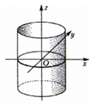

7.5.5.1.Эллиптический цилиндр

Эллиптический цилиндр задается каноническим уравнением:
 Каноническое
уравнение эллиптического цилиндра
.
Каноническое
уравнение эллиптического цилиндра
.Осью цилиндра является координатная ось  , поперечные сечения – эллипсы.
Плоскости и являются
плоскостями зеркальной симметрии поверхности
, поперечные сечения – эллипсы.
Плоскости и являются
плоскостями зеркальной симметрии поверхности
, поперечные сечения – эллипсы.
Плоскости и являются
плоскостями зеркальной симметрии поверхности